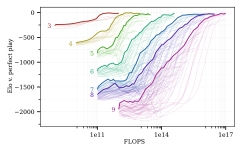
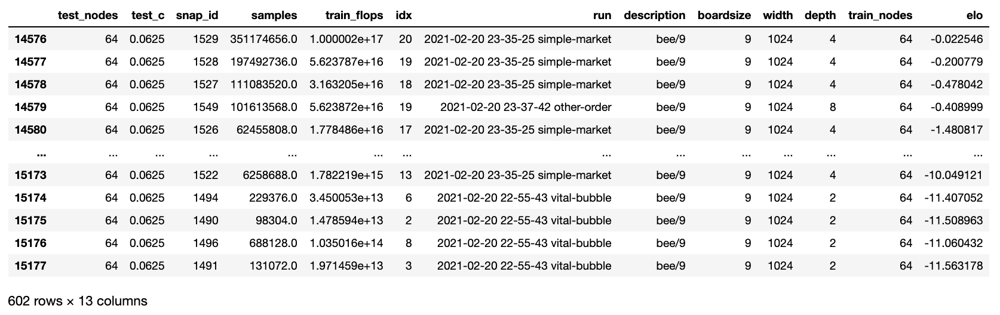

Scaling Scaling Laws with Board Games¶
Below you can find the code, models and data from our Scaling Scaling Laws paper.
{kind=link}
There’s an example notebook demonstrating many of the things discussed below.
Code¶
Our code is on Github. You can clone it and work directly from the repo, or you can install it as a package with
pip install git+https://github.com/andyljones/boardlaw.git#egg=boardlaw
We recommend you do this in a virtual environment. Or, better yet, a Docker container. You can find our Dockerfile here.
With the requirements installed and the database (see below) downloaded, you’ll be able to reproduce all the plots from the paper using the paper module. We recommend using the paper-v2 commit if this is your goal, as development has continued beyond the paper.
If you want to train your own models, take a look in the main module.
If you want to evaluate your own models, take a look in the arena package.
Evaluation Data¶
Our evaluation data is held in a SQLite database. It’ll be downloaded automatically when you first query it:
from boardlaw import sql, elos
sql.agent_query()
You can find the schema for the database in the sql module, along with documentation of the fields and some utility functions for querying it.
Elos are not stored in the database directly, but can be calculated from the trials table.
from boardlaw import sql, elos
boardsize = 9
ags = (sql.agent_query()
.query('test_nodes == 64'))
# There are a *lot* of trials, so for speed here we filter the table down
trials = (sql.trial_query(boardsize, 'bee/%')
.query('black_wins + white_wins >= 512')
.groupby(['black_agent', 'white_agent'])
.first().reset_index()
.loc[lambda df: df.black_agent.isin(ags.index)]
.loc[lambda df: df.white_agent.isin(ags.index)])
ws, gs = elos.symmetrize(trials)
ags_elos = elos.solve(ws, gs)
ags = ags.join(ags_elos, how='inner')
which will give you a table that looks like this one
{kind=link}
The Elos here are in base e because that’s easier to deal with internally. Multiply by 400/ln(10) to get the Elos that you’re used to.
Agent Data¶
To download and play a specific agent:
from boardlaw.arena import common
from boardlaw import analysis, backup
run, snapshot = '2021-02-20 21-11-32 intent-nets', 18
backup.download_agent(run, snapshot)
ag = common.agent(run, snapshot)
worlds = common.worlds(run, n_envs=1)
analysis.record(worlds, [ag, ag], n_trajs=1).notebook()
You can alternatively get a full trace of the game with analysis.rollout(world, agents, n_trajs=1).
Training Data¶
To download the files for a specific training run, the best option is to use backblaze’s sync tool. There is a 100GB/day cap on downloading this data, which amounts to 2x downloads of the entire dataset. If you’re running into this limit, come talk to me.
from boardlaw import backup
import sys
import time
run = '2021-03-26 15-30-17 harsh-wait'
dest = 'local_storage'
bucket = 'boardlaw'
api = backup.api(bucket)
syncer = b2.Synchronizer(4)
with b2.SyncReport(sys.stdout, False) as reporter:
syncer.sync_folders(
source_folder=b2.parse_sync_folder(f'b2://boardlaw/output/pavlov/{run}', api),
dest_folder=b2.parse_sync_folder(f'{run}', api),
now_millis=int(round(time.time() * 1000)),
reporter=reporter)
When synced into the output/pavlov subdirectory, you can load the files using functions from pavlov, a small
monitoring library built alongside this project:
from pavlov import stats, storage, runs, files
run = '2021-03-26 15-30-17 harsh-wait'
# To list the runs you've downloaded
runs.pandas()
# To list the files downloaded for a specific run
files.pandas(run)
# To view the residual variance from the run
stats.pandas(run, 'corr.resid-var')
The state dicts from the snapshots themselves can also be accessed through pavlov using the pavlov.storage module.